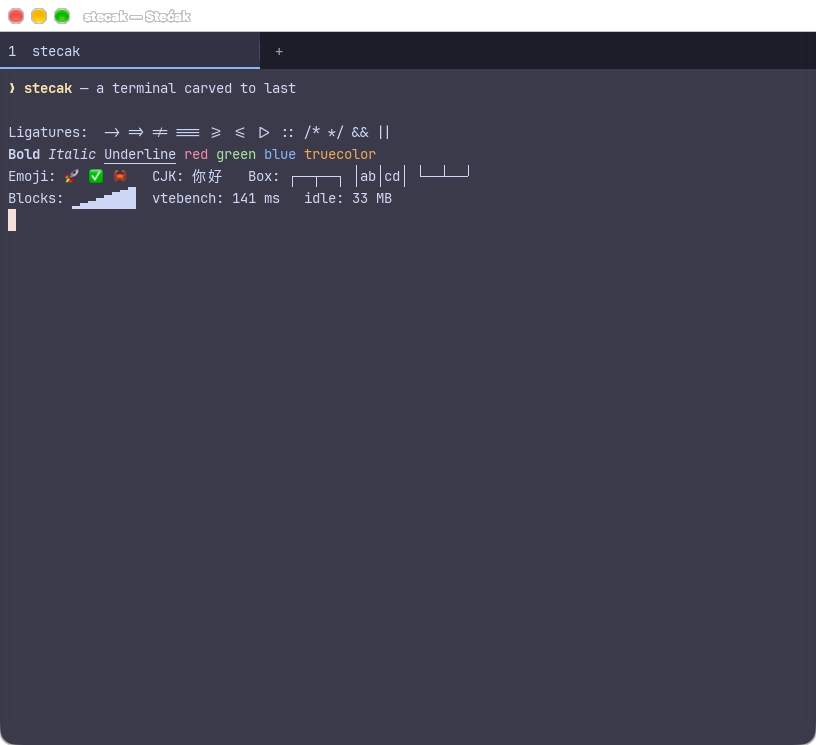
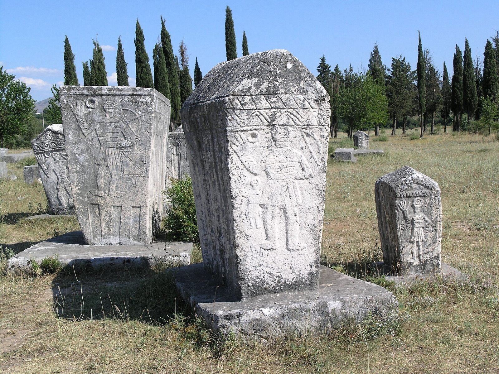
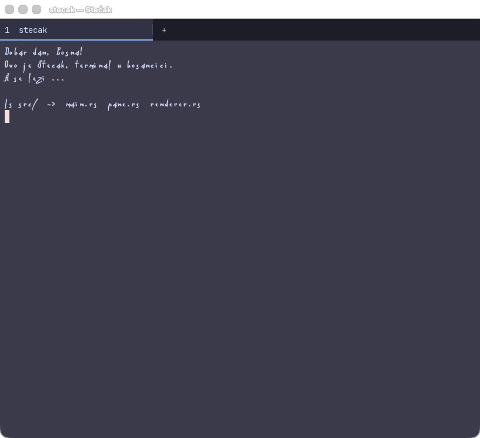

on vtebench, the fastest of four tested. Ghostty took 191 ms, Terminal.app 2,611 ms and iTerm2 12,383 ms.
per window at rest. Extra tabs and splits cost about 1 MB each.
CPU when idle. Output in background tabs never touches the GPU.
Measured on an Apple M5 with macOS. vtebench measures how fast a terminal reads program output, not input latency.

Small, fast, complete
- GPU rendering on Metal, DX12 and Vulkan
- Programming ligatures and color emoji
- Tabs and resizable splits
- Search, selection, clickable links
- Mouse support for vim, tmux and htop
- Transparency and background blur
- Background images, like iTerm2
- Settings page and live-reloading config
Benchmarks
Measured on an Apple M5 running macOS, in one sitting, at a window size of about 100×30. vtebench (from the Alacritty project) times how fast a terminal reads and processes program output. Lower is better everywhere. It doesn't measure keypress latency or frame pacing. iTerm2 does far more than Stećak, and features cost speed and memory.
Read throughput: vtebench total
Sum of 10 workloads, ms per MiB · bars to scale
Show data table
| Terminal | ms (sum of means) |
|---|---|
| Stećak | 141.1 |
| Ghostty | 191.5 |
| Terminal.app | 2,610.8 |
| iTerm2 | 12,382.6 |
Memory per window
macOS phys_footprint, MB · Ghostty and Terminal.app sampled once, 4 s after launch
Show data table
| Terminal | MB | How measured |
|---|---|---|
| Stećak | 33 | steady state, 1 window (51 MB at 4 s) |
| Terminal.app | 52 | fresh process, 4 s after launch |
| iTerm2 | +79 | added by one window to a running app |
| Ghostty | 139 | fresh instance, 4 s after launch |
Per workload: Stećak vs Ghostty
ms per MiB · Stećak is faster in 6 of 10 workloads, Ghostty in 4 · iTerm2 and Terminal.app are off this scale (see table)
Show data table
| Workload | Stećak | Ghostty | Terminal.app | iTerm2 |
|---|---|---|---|---|
| dense_cells | 4.3 | 12.8 | 20.3 | 112.3 |
| medium_cells | 6.2 | 13.6 | 36.8 | 1,398.3 |
| scrolling | 9.5 | 30.9 | 136.8 | 1,194.0 |
| scrolling_bottom_region | 9.7 | 21.2 | 116.1 | 1,351.7 |
| scrolling_bottom_small_region | 10.2 | 21.9 | 114.7 | 1,408.7 |
| scrolling_fullscreen | 14.9 | 30.7 | 140.6 | 679.2 |
| scrolling_top_region | 31.0 | 23.4 | 270.9 | 3,264.0 |
| scrolling_top_small_region | 24.1 | 18.9 | 437.0 | 1,441.7 |
| sync_medium_cells | 18.5 | 11.8 | 156.2 | 1,416.7 |
| unicode | 12.6 | 6.1 | 1,181.5 | 116.1 |
Bulk output: cat of a 34 MB colored text file
Mean of 3 runs, wall-clock time · the screen kept updating throughout
What is a stećak?
Stećci (singular stećak) are monumental medieval tombstones, carved from limestone between the 12th and 16th centuries. They lie scattered across the hills and valleys of Bosnia and Herzegovina and neighbouring lands. Some are flat slabs, some are chests, and some are gabled like small stone houses. Many carry reliefs: rosettes, crescent moons, spirals, vines, hunting scenes, knights, and the kolo, a round dance.


Words in stone
Some stećci carry inscriptions in bosančica, the Bosnian form of the Cyrillic script. It's the same script as the Charter of Ban Kulin (1189), one of the oldest surviving documents of Bosnian history. Many epitaphs open with the same quiet formula:
“A se leži …” — “And here lies …”
The poet Mak Dizdar built his celebrated collection Kameni spavač (The Stone Sleeper, 1966) on these stones and their voices. A terminal is all text, and it's where we leave our own small inscriptions every day. So the name felt right.
Bosančica mode
Press ⌘⇧B to draw your terminal in bosančica. Fonts like BoSanko2 map ordinary Latin letters to Bosančica letterforms. Only the rendering changes, so what you type, copy and search stays plain text.
The font isn't bundled with Stećak. BoSanko2 is the work of designer Miomirka Mila Melank. You can see it in action in the e-bosanski.ba converter. Install it, or point the config at the file; the README explains how.

Install
macOS
Download the latest .dmg and drag Stećak to Applications. The app isn't notarized yet, so the first time, right-click it and choose Open, or run:
xattr -dr com.apple.quarantine "/Applications/Stećak.app"
From source (macOS, Linux)
curl -fsSL https://raw.githubusercontent.com/alminisl/stecak/main/install.sh | sh
Anywhere with Cargo, including Windows
cargo install --git https://github.com/alminisl/stecak
Stećak is alpha software. It's a daily driver on macOS; Windows and Linux build in CI but haven't been used day to day yet.